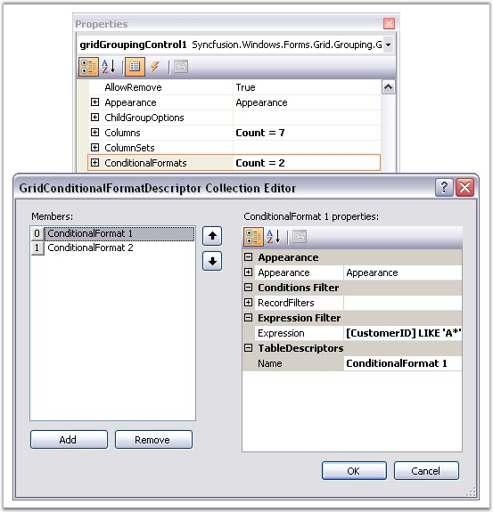
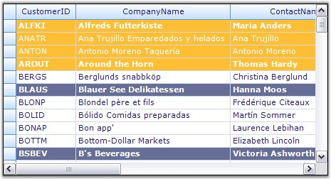

Grid Grouping control has in-built support for Conditional Formatting. This feature allows you to format grid cells based on a certain condition. This can be achieved by defining a GridConditionalFormatDescriptor for the grid. Using this descriptor, you can specify the filter criteria for the cells and the style to be applied for the filtered cells. Once these specifications are defined, then the given styles are applied to only those cells that satisfy the condition specified.
Conditional Formatting can be specified through the designer itself by accessing the TableDescriptor.ConditionalFormats property. This will open the GridConditionalFormatDescriptor editor wherein you can add as many formatters as you want. For each such formatter, you need to specify the filter criteria either by adding RecordFilters or by an Expression. The below property editor illustrates this process.

Figure 324: GridConditionalFormatDescriptor Collection Editor
Programmatically
Following code example illustrates how to apply conditional formatting to the grouping grid.
1. Define a Conditional Format Descriptor and specify a filter criteria and style to be applied.
|
[C#]
// Apply the following style to the records whose CustomerID starts with 'A'. GridConditionalFormatDescriptor format1 = new GridConditionalFormatDescriptor(); format1.Appearance.AnyRecordFieldCell.Interior = new BrushInfo(Color.FromArgb(255, 191, 52)); format1.Appearance.AnyRecordFieldCell.TextColor = Color.White; format1.Expression = "[CustomerID] LIKE \'A*\'"; format1.Name = "ConditionalFormat 1";
// Apply the following style to the records whose ContactTitle = 'Sales Representative'. GridConditionalFormatDescriptor format2 = new GridConditionalFormatDescriptor(); format2.Appearance.AnyRecordFieldCell.Font.Bold = true; format2.Appearance.AnyRecordFieldCell.Interior = new BrushInfo(Color.FromArgb(102, 110, 152)); format2.Appearance.AnyRecordFieldCell.TextColor = Color.White; format2.Expression = "[ContactTitle] LIKE \'Sales Representative\'"; format2.Name = "ConditionalFormat 2"; |
|
[VB.NET]
'Apply the following style to the records whose CustomerID starts with 'A' Dim format1 As GridConditionalFormatDescriptor = New GridConditionalFormatDescriptor() format1.Appearance.AnyRecordFieldCell.Interior = New BrushInfo(Color.FromArgb(255, 191, 52)) format1.Appearance.AnyRecordFieldCell.TextColor = Color.White format1.Expression = "[CustomerID] LIKE \'A*\'" format1.Name = "ConditionalFormat 1"
'Apply the following style to the records whose ContactTitle = 'Sales Representative' Dim format2 As GridConditionalFormatDescriptor = New GridConditionalFormatDescriptor() format2.Appearance.AnyRecordFieldCell.Font.Bold = True format2.Appearance.AnyRecordFieldCell.Interior = New BrushInfo(Color.FromArgb(102, 110, 152)) format2.Appearance.AnyRecordFieldCell.TextColor = Color.White format2.Expression = "[ContactTitle] LIKE \'Sales Representative\'" format2.Name = "ConditionalFormat 2" |
2. Add the descriptor to the TableDescriptor.ConditionalFormats property.
|
[C#]
this.gridGroupingControl1.TableDescriptor.ConditionalFormats.Add(format1); this.gridGroupingControl1.TableDescriptor.ConditionalFormats.Add(format2); |
|
[VB.NET]
Me.gridGroupingControl1.TableDescriptor.ConditionalFormats.Add(format1) Me.gridGroupingControl1.TableDescriptor.ConditionalFormats.Add(format2) |
Given below is a sample screenshot.

Figure 325: Conditional Formatting applied to the Grid Grouping Control
 Note: For more
details, refer the following browser sample:
Note: For more
details, refer the following browser sample:
<Install Location>\Syncfusion\EssentialStudio\[Version Number]\Windows\Grid.Grouping.Windows\Samples\2.0\Appearance\Conditional Formatting Demo